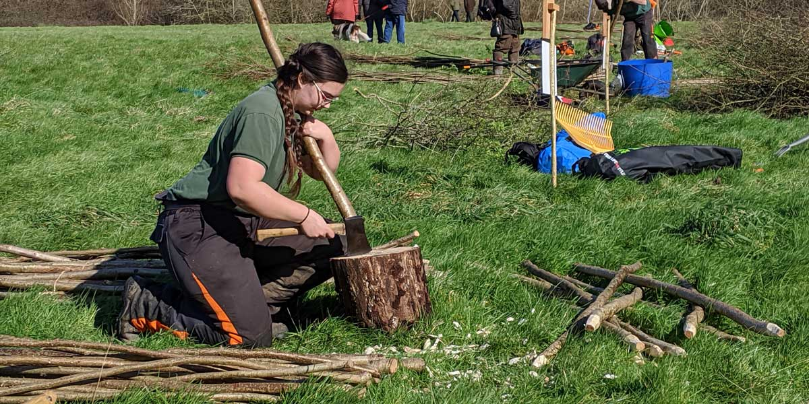

The 27th Annual Hedgelaying Competition was held on 29 February 2020 at Coombe Farm Brighstone by kind permission of Mr and Mrs James Dawes.
Lead sponsors in 2020: Landscape Therapy; Wight AONB; Pinkeye Graphics Ltd;
Supporters: W Hurst & Sons, Hants and IW Wildlife Trust, Mrs Mary Sitch

On a return visit to Coombe Farm, Brighstone, the 27th Annual Isle of Wight Hedgelaying Competition provided its usual combination of traditional craft and skill, keen competition, and excellent refreshments.
The weather forecast was dire, but in fact the day turned out to be bright and sunny throughout, with only a stiff breeze to remind visitors of the predicted storm. Twelve pitches were cut during the day, with 21 hedgelayers competing including five teams making up the largest class.
Many spectators turned up to enjoy the day, not only enjoying the competition but also other attractions such as the Vectis Searchers metal detecting demonstration, Ralph Griffin's display of billhooks and tools, and the popular running display of static engines and vehicles from Vectis Vintage Tractors and Engines Club.
The judges were Alan Ashby, of Tunbridge Wells, and the Island's AONB lead officer, Richard Grogan. At the start of the event organiser Tony Ridd paid tribute to Peter Tunks, former supreme national champion, a regular judge and great supporter of the competition, who died in 2019.
The four open competitors fought it out on a separate stretch of hedge on the far side of the field. Defending open champion Phil Hart, from Lewes was pitched against two Island regulars Tom Murphy and Kingsley Hollis, alongside newcomer Matthew Beard from Sussex. In a very closely-scored class, Phil Hart successfully defended his title and lifted the Denis Russell Cup (formerly the AONB Cup) for the second time; beating Tom Murphy into second place by only two points. But Tom had some consolation in not only winning the Peter Tunks £20 note award for the best stakes and binding, but also the Landscape Therapy Best Isle of Wight Competitor award.
The three competitors in the novice class were all from the Isle of Wight, and the victorious novice was Tod Carder of Hulverstone who comfortably defeated Tony Gillingham into second place by six points.
The large team class attracted a lot of attention from the spectators, as with 14 workers on a short stretch of hedge there was a lot to see. The winning team, the Tree Fellers, not only took away the Landscape Therapy Trophy, but also the W Hurst & Sons cup for the best hedge laid with hand tools.
Results
| Position | Class | Name | Score |
|---|---|---|---|
| 1 | Open | Phil Hart | 73 |
| 2 | Open | Tom Murphy | 71 |
| 3 | Open | Kingsley Hollis | 69 |
| 4 | Open | Matthew Beard | 68 |
| 1 | Novice | Tod Carder | 65 |
| 2 | Novice | Tony Gillingham | 59 |
| 3 | Novice | Shaun Grant | |
| 1 | Team | 'The Tree Fellers' (Ed Daish-Miller, Jim Clinton, Tom Sargeant) | 69 |
| 2 | Team | HIWWT Apprentices: Andrew Toms, James Warder, Joe Rackstraw, Jon Jewett | 65 |
| 3 | Team | HIWWT Staff: Emma Hunt, Jamie Marsh, Amanda Hollands | 64 |
| 4 | Team | Cross Country Services Senior Team - Will and Sam Cross | 60 |
| 5 | Team | Cross Country Services Junior Team - Toby & Lily-Mae |
Winner of the W Hurst & Sons cup for the best hedge laid with hand tools:
Tree Fellers
The Peter Tunks £20 note award:
An award was presented by judge Alan Ashby on the day in memory of former supreme national champion Peter Tunks, a regular judge and great supporter of the competition, who died in 2019. The award is a £20 note for the best stakes and binding. The winner was Tom Murphy.
Landscape Therapy Best Isle of Wight Competitor award:
Tom Murphy